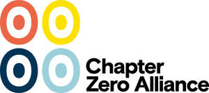

Trade Mark Journal No.2026/005 30 January 2026
UK00004325400 16 January 2026 (9,35,36,38,41,42,45)

- Class 9
- Computer software; downloadable software applications; downloadable electronic publications; downloadable databases; recorded content; data processing equipment; downloadable educational materials; software for environmental, sustainability and climate governance purposes; software for training and education in corporate governance; downloadable reports, toolkits and guidance relating to climate, nature and corporate governance; downloadable electronic publications, namely, books, manuals, newsletters, journals and magazines, in the field of business and business management, all the aforesaid relating to climate change, environmentalism, sustainability and corporate governance.
- Class 35
- Business consultancy; business management and assistance; business research; business information; business enquiries; corporate governance consultancy; advisory services relating to corporate strategy and board effectiveness; promoting public awareness of environmental, social and governance (ESG) issues; business networking services; arranging and conducting business conferences and forums; organisation of business meetings; association services of a business nature, namely promoting the interests of members and partners; compilation, systemisation, indexing and curation of information into computer databases; database management; knowledge management services for businesses; market intelligence and opinion polling relating to climate and sustainability for business; advisory, consultation and information services in relation to all of the foregoing.
- Class 36
- Financial consultancy; advisory services relating to investment and finance; information services relating to sustainable finance and climate related financial risks; providing information on responsible investment and ESG criteria; charitable fundraising; philanthropic services concerning monetary donations; administration and management of charitable funds; financial grant making; allocation and distribution of funds to charitable projects internationally; arranging and conducting financial briefings relating to climate transition and nature related risks; advisory, consultation and information services in relation to all of the foregoing.
- Class 38
- Telecommunications services; providing access to online platforms and portals; transmission of data, messages, text, sound, images and information via the Internet and other communications networks; provision of online forums and chatrooms for business networking and discussion of governance, sustainability, climate and nature issues; providing access to an online knowledge hub; streaming of webcasts and webinars; advisory, consultation and information services in relation to all of the foregoing.
- Class 41
- Education and training services; provision of education and training; provision of training courses; arranging and conducting conferences, congresses, seminars, workshops, webinars and symposiums; organising exhibitions and events for educational or cultural purposes; publication of educational materials; translation and interpretation services; editorial services; providing online publications (not downloadable); providing online non downloadable videos, toolkits and educational content; providing online electronic library services featuring publications and reference materials; curation of educational content for others; educational information provided online from a computer database or the Internet; coaching and certification of board directors in climate and nature governance; advisory, consultation and information services in relation to all of the foregoing.
- Class 42
- Scientific and technological services; design and development of computer software; software as a service (SaaS); platform as a service (PaaS); hosting of platforms and portals; providing temporary use of non downloadable software for education, training, business networking and governance purposes; cloud computing services; design, development, maintenance, updating and hosting of databases; data warehousing; data curation of scientific, technical and business information for others; development and maintenance of websites; advisory, consultation and information services in relation to all of the foregoing.
- Class 45
- Advisory services relating to regulatory compliance and governance standards; providing information on legal and regulatory developments affecting corporate governance, sustainability, climate and nature-related issues; monitoring of regulatory developments for compliance purposes; association services for coordinating and representing a global network of national and regional bodies in the fields of corporate governance, sustainability, climate and nature-related issues; acting as an umbrella organisation for affiliated bodies; running a membership network and setting membership standards and codes of conduct; lobbying services relating to legislation and regulation; advisory, consultation and information services in relation to all of the foregoing.
Chapter Zero Limited
Representative: Pinsent Masons LLP